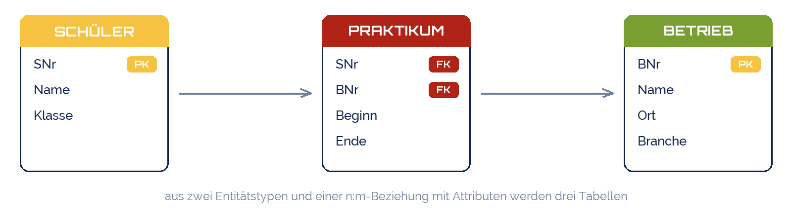

yoshitaka2
yoshitaka2
Good morning!
Nur das Schöne wird die Welt retten!
Fjodor Dostojewski
Nicht verzagen, Doc Alvers fragen!
Informatik — FOS 12
Entity-Relationship-Modell II
Vom Diagramm zur Datenbank: drei Überführungsregeln
Nicht verzagen, Doc Alvers fragen!
Kapitel 01
Drei Regeln
Aus jedem ER-Modell wird mechanisch ein Satz Tabellen
Nicht verzagen, Doc Alvers fragen!
Die Überführungsregeln im Überblick
| Regel | Im ER-Modell | In der Datenbank |
|---|---|---|
| 1 | Entitätstyp mit Attributen | eine Tabelle, Attribute = Spalten, Schlüssel = PRIMARY KEY |
| 2 | Beziehung 1:n | Fremdschlüssel auf der n-Seite |
| 3 | Beziehung n:m | eigene Tabelle mit zwei Fremdschlüsseln (+ Beziehungsattribute) |
| 3a | Beziehung 1:1 | Fremdschlüssel auf einer Seite — oder beide Tabellen zusammenlegen |
Die Regeln sind so mechanisch, dass Werkzeuge sie automatisch anwenden
Trotzdem von Hand können: in der Klausur gibt es kein Werkzeug
Danach prüfen: kommt jede Information genau einmal vor?
Nicht verzagen, Doc Alvers fragen!
Kapitel 02
Regel 1: Entitätstyp wird Tabelle
Attribute werden Spalten, das Schlüsselattribut wird Primärschlüssel
Nicht verzagen, Doc Alvers fragen!
Regel 1: SCHÜLER wird zur Tabelle Schueler
| SNr | Name | Klasse | Geburtsdatum |
|---|---|---|---|
| 1001 | Lena Krause | FO12a | 2008-04-17 |
| 1002 | Tim Vogel | FO12a | 2007-11-02 |
| 1003 | Mia Hahn | FO12b | 2008-09-30 |
Rechteck → Tabelle, jede Ellipse → Spalte, unterstrichen → PRIMARY KEY
Für jede Spalte einen Datentyp wählen: INTEGER, TEXT, ISO-Datum als TEXT
Zusammengesetzte Attribute (Adresse) → mehrere Spalten: Straße, PLZ, Ort
Nicht verzagen, Doc Alvers fragen!
Regel 1 in SQL
CREATE TABLE Schueler ( SNr INTEGER PRIMARY KEY, -- das unterstrichene Attribut Name TEXT NOT NULL, Klasse TEXT NOT NULL, Geburtsdatum TEXT -- 'JJJJ-MM-TT' ); CREATE TABLE Lehrkraft ( LNr INTEGER PRIMARY KEY, Name TEXT NOT NULL, Durchwahl INTEGER );
Nicht verzagen, Doc Alvers fragen!
Kapitel 03
Regel 2: 1:n wird Fremdschlüssel
Der Schlüssel der 1-Seite wandert als Spalte auf die n-Seite
Nicht verzagen, Doc Alvers fragen!
Regel 2: LEHRKRAFT leitet KURS (1:n)
Ein Kurs hat genau eine Lehrkraft → er merkt sich ihre Nummer: LNr in Kurs
Die Lehrkraft merkt sich nichts: viele Kurse passen nicht in eine Zelle
Regel: der Fremdschlüssel steht immer auf der n-Seite
| LNr | Name | Durchwahl |
|---|---|---|
| 1 | Alvers | 31 |
| 2 | Schulze | 42 |
| KNr | Fach | Raum | LNr |
|---|---|---|---|
| 3 | Informatik | 204 | 1 |
| 4 | Physik | 305 | 2 |
| 5 | Mathematik | 118 | 1 |
Nicht verzagen, Doc Alvers fragen!
Regel 2 in SQL: REFERENCES
CREATE TABLE Kurs ( KNr INTEGER PRIMARY KEY, Fach TEXT NOT NULL, Raum TEXT, LNr INTEGER NOT NULL REFERENCES Lehrkraft(LNr) -- der Fremdschlüssel ); -- NOT NULL: jeder Kurs MUSS eine Lehrkraft haben -> Min-Max (1,1) -- ohne NOT NULL: Kurs darf (noch) ohne Lehrkraft sein -> (0,1) -- Reihenfolge: Lehrkraft VOR Kurs anlegen - der Verweis braucht sein Ziel PRAGMA foreign_keys = ON;
Nicht verzagen, Doc Alvers fragen!
Kapitel 04
Regel 3: n:m wird eigene Tabelle
Die Beziehung bekommt eine Tabelle mit zwei Fremdschlüsseln
Nicht verzagen, Doc Alvers fragen!
Regel 3: SCHÜLER belegt KURS (n:m)
Auf keiner Seite passt der Fremdschlüssel: beide hätten viele Werte
Also bekommt die Raute eine eigene Tabelle: Belegung (SNr, KNr)
Beide Spalten zusammen sind der Primärschlüssel: jedes Paar nur einmal
Jede Spalte ist zugleich Fremdschlüssel auf ihre Tabelle
| SNr | KNr |
|---|---|
| 1001 | 3 |
| 1001 | 4 |
| 1002 | 3 |
| 1003 | 3 |
Nicht verzagen, Doc Alvers fragen!
Regel 3 in SQL: zusammengesetzter Schlüssel
CREATE TABLE Belegung ( SNr INTEGER NOT NULL REFERENCES Schueler(SNr), KNr INTEGER NOT NULL REFERENCES Kurs(KNr), PRIMARY KEY (SNr, KNr) -- das Paar ist der Schlüssel ); -- Beziehungsattribute wandern mit in die Beziehungstabelle: CREATE TABLE Praktikum ( SNr INTEGER NOT NULL REFERENCES Schueler(SNr), BNr INTEGER NOT NULL REFERENCES Betrieb(BNr), Beginn TEXT NOT NULL, Ende TEXT, PRIMARY KEY (SNr, BNr, Beginn) -- derselbe Betrieb zweimal? dann gehört Beginn dazu );
Nicht verzagen, Doc Alvers fragen!
Das Praktikums-Modell nach der Überführung

Regel 1 zweimal: Schüler, Betrieb
Regel 3 einmal: absolviert → Tabelle Praktikum mit Beginn und Ende
Probe: Betrieb „Müller GmbH, Dresden, Handwerk“ steht genau einmal — egal wie viele Praktika
Nicht verzagen, Doc Alvers fragen!
Fallen bei der Überführung
Typische Fehler
Fremdschlüssel auf der 1-Seite: „Kurse: 3, 4, 5“ in einer Zelle
n:m als zwei Fremdschlüssel statt eigener Tabelle
Schlüssel vergessen — Tabelle ohne PRIMARY KEY
Tabellen in falscher Reihenfolge angelegt
So geht es richtig
Fremdschlüssel steht dort, wo ein Wert reicht
Jede n:m-Raute wird eine Tabelle
Jede Tabelle hat einen Primärschlüssel — notfalls zusammengesetzt
Erst Tabellen ohne, dann mit Fremdschlüsseln — und PRAGMA an
Nicht verzagen, Doc Alvers fragen!
Entität wird Tabelle, 1:n wird Fremdschlüssel, n:m wird eigene Tabelle.
Merksatz
Nicht verzagen, Doc Alvers fragen!
Eure Aufgabe: euer ER-Modell wird Datenbank
Nehmt euer Modell von letzter Woche — Praktikum, Verein, Nebenjob …
Wendet die drei Regeln an: schreibt zuerst alle Tabellen mit Spalten auf Papier, markiert PK und FK
Legt die Tabellen in SQLite an — richtige Reihenfolge, PRAGMA foreign_keys = ON
Drei Datensätze je Tabelle, dann eine JOIN-Abfrage über zwei Tabellen
Provoziert einen Fremdschlüssel-Fehler und erklärt, welche Regel gegriffen hat
Nicht verzagen, Doc Alvers fragen!